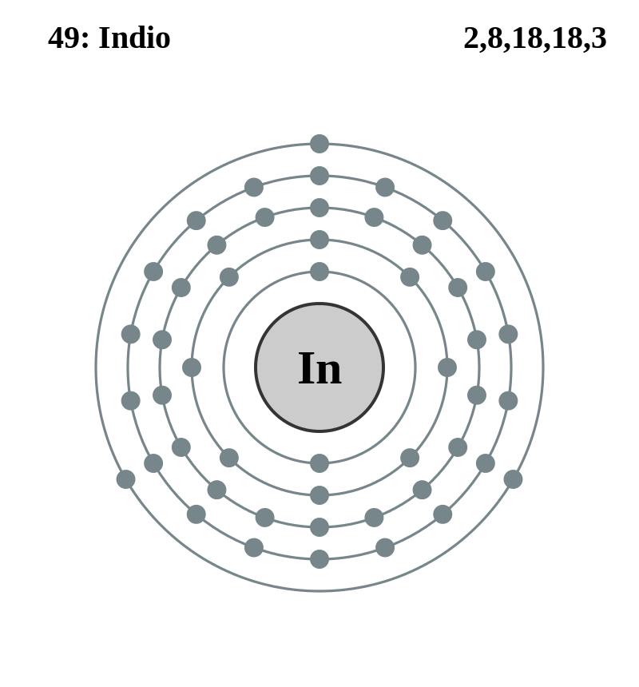

|
|
||
|
Indio Este metal del bloque p es muy blando y de un color blanco plateado con un lustre brillante. El indio moja el vidrio y produce un ruido agudo cuando se dobla (debido a la agrupación de los cristales). El indio es esencial para la tecnología moderna, especialmente en la industria de los semiconductores. Se usa para producir aleaciones con bajas temperaturas de fusión, en los sellos de metal blanco de alto vacío, para crear revestimientos conductores transparentes sobre vidrio y en transistores, rectificadores, termistores y fotoconductores. |
 |
DATOS Número Atómico: 49 Peso Atómico: 114.8 Electronegatividad: 1,78 Configuración Electrónica: 4d105s25p1 Estados de Oxidación: +3 No. de Electrones de Valencia: 3 |